queenstown-detail-batch-02
Authorized reference screenshots. Attribution retained. Open full-size images to review clarity; capture success alone is not visual acceptance.
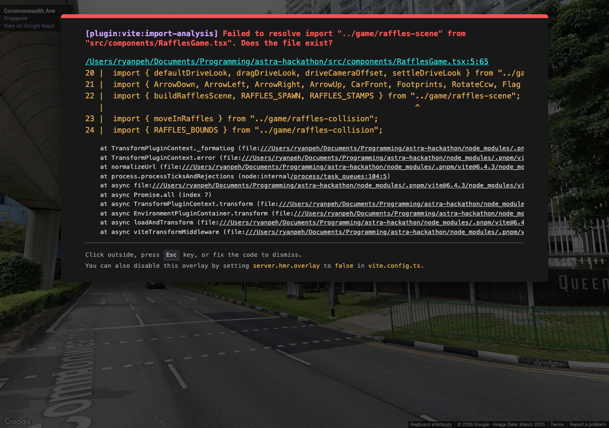
station-clear-0 — Review station-clear facade rhythm, public-space furniture, street vegetation and relative street scale; authored composite reference only
Source 2025-03, heading 0°, pitch 8°, zoom 1. Metadata / review
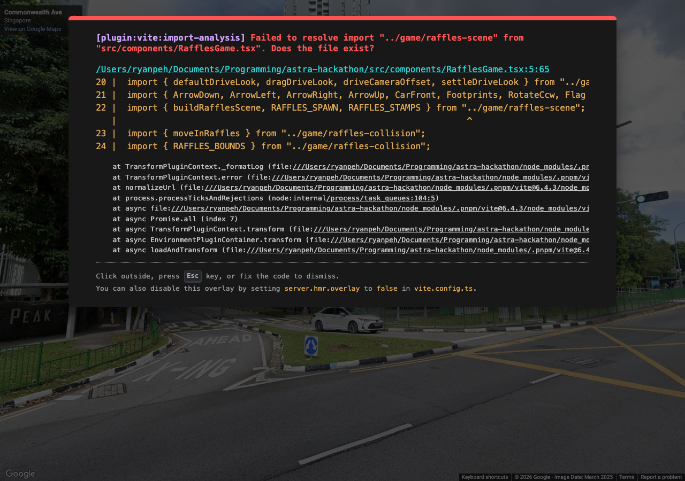
station-clear-90 — Review station-clear facade rhythm, public-space furniture, street vegetation and relative street scale; authored composite reference only
Source 2025-03, heading 90°, pitch 8°, zoom 1. Metadata / review
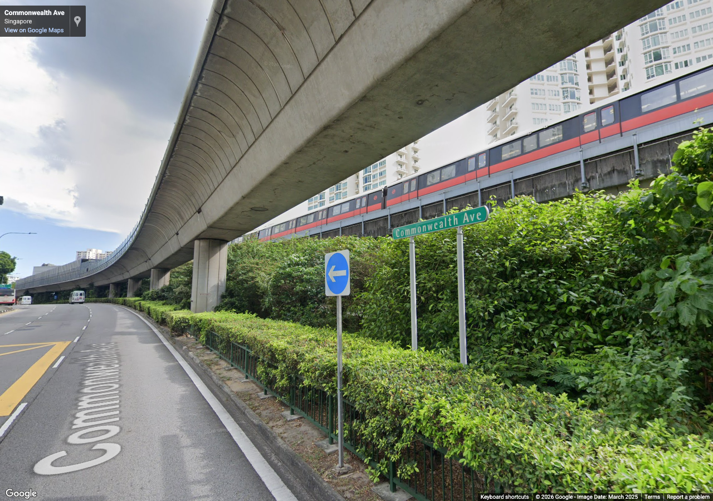
station-clear-180 — Review station-clear facade rhythm, public-space furniture, street vegetation and relative street scale; authored composite reference only
Source 2025-03, heading 180°, pitch 8°, zoom 1. Metadata / review
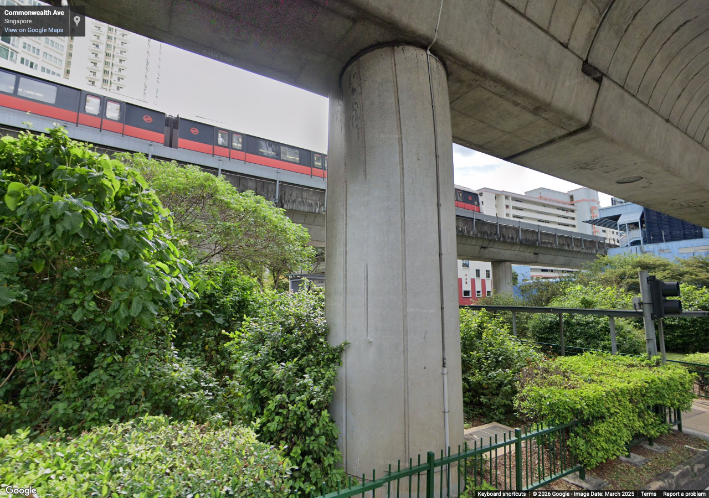
station-clear-270 — Review station-clear facade rhythm, public-space furniture, street vegetation and relative street scale; authored composite reference only
Source 2025-03, heading 270°, pitch 8°, zoom 1. Metadata / review
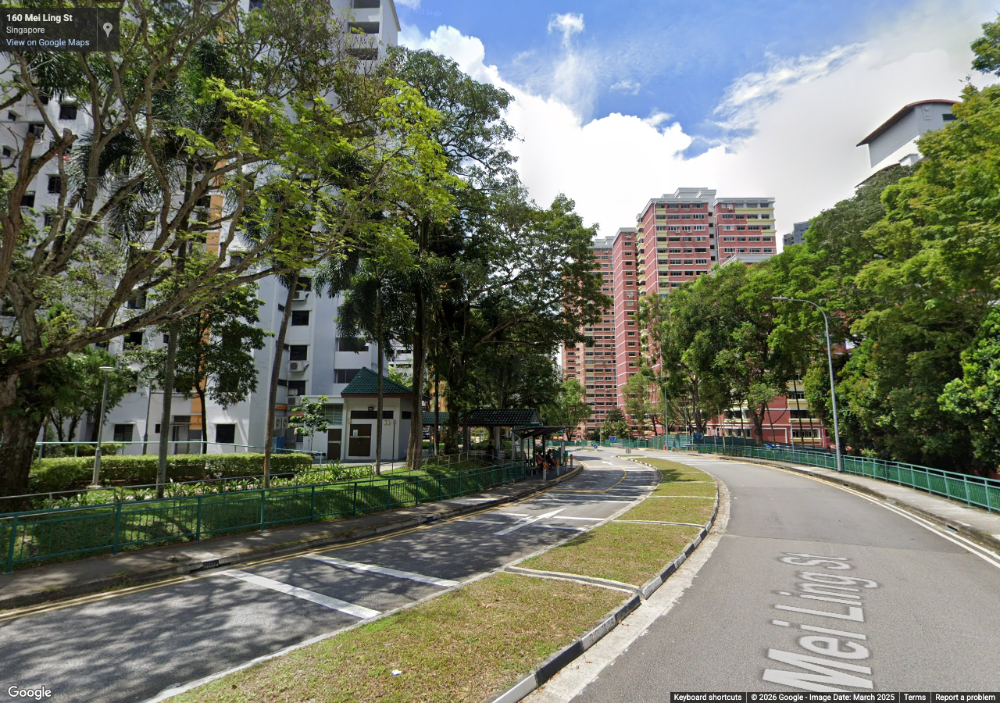
stirling-0 — Review stirling facade rhythm, public-space furniture, street vegetation and relative street scale; authored composite reference only
Source 2025-03, heading 0°, pitch 8°, zoom 1. Metadata / review
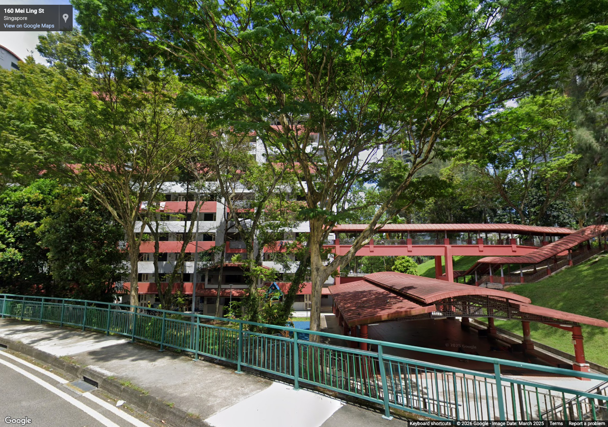
stirling-90 — Review stirling facade rhythm, public-space furniture, street vegetation and relative street scale; authored composite reference only
Source 2025-03, heading 90°, pitch 8°, zoom 1. Metadata / review
 stirling-180 — Review stirling facade rhythm, public-space furniture, street vegetation and relative street scale; authored composite reference only
stirling-180 — Review stirling facade rhythm, public-space furniture, street vegetation and relative street scale; authored composite reference only
Source 2025-03, heading 180°, pitch 8°, zoom 1. Metadata / review
 stirling-270 — Review stirling facade rhythm, public-space furniture, street vegetation and relative street scale; authored composite reference only
stirling-270 — Review stirling facade rhythm, public-space furniture, street vegetation and relative street scale; authored composite reference only
Source 2025-03, heading 270°, pitch 8°, zoom 1. Metadata / review
 mei-ling-0 — Review mei-ling facade rhythm, public-space furniture, street vegetation and relative street scale; authored composite reference only
mei-ling-0 — Review mei-ling facade rhythm, public-space furniture, street vegetation and relative street scale; authored composite reference only
Source 2019-11, heading 0°, pitch 8°, zoom 1. Metadata / review
mei-ling-90 — Review mei-ling facade rhythm, public-space furniture, street vegetation and relative street scale; authored composite reference only
Source 2019-11, heading 90°, pitch 8°, zoom 1. Metadata / review
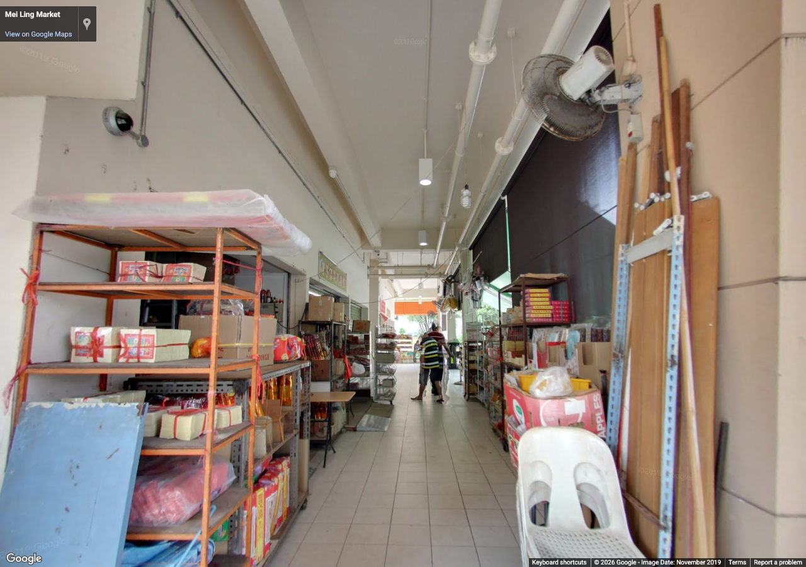
mei-ling-180 — Review mei-ling facade rhythm, public-space furniture, street vegetation and relative street scale; authored composite reference only
Source 2019-11, heading 180°, pitch 8°, zoom 1. Metadata / review
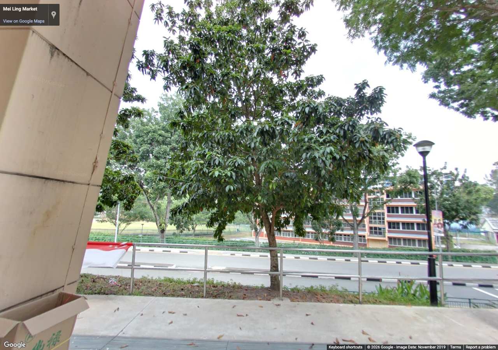
mei-ling-270 — Review mei-ling facade rhythm, public-space furniture, street vegetation and relative street scale; authored composite reference only
Source 2019-11, heading 270°, pitch 8°, zoom 1. Metadata / review
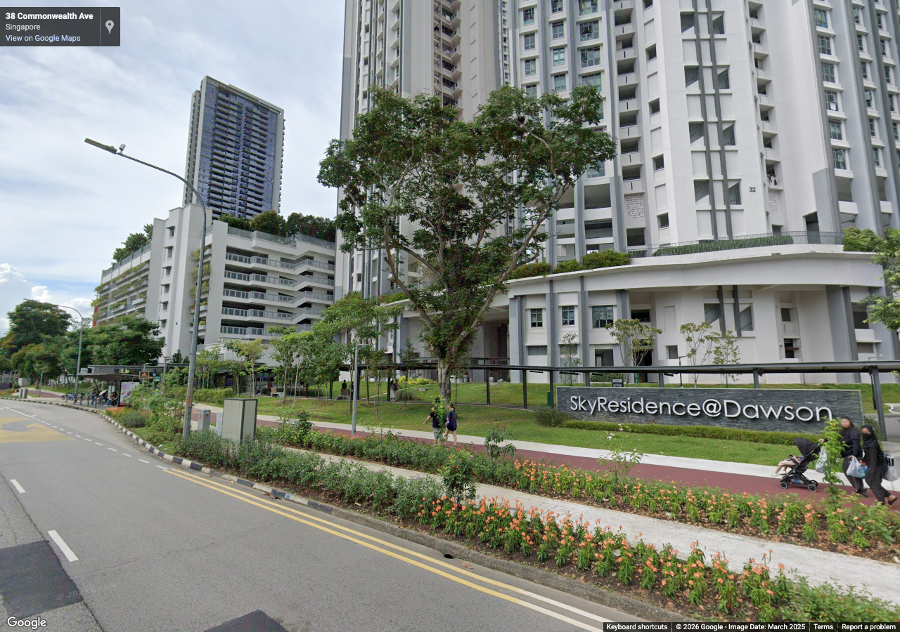
margaret-0 — Review margaret facade rhythm, public-space furniture, street vegetation and relative street scale; authored composite reference only
Source 2025-03, heading 0°, pitch 8°, zoom 1. Metadata / review
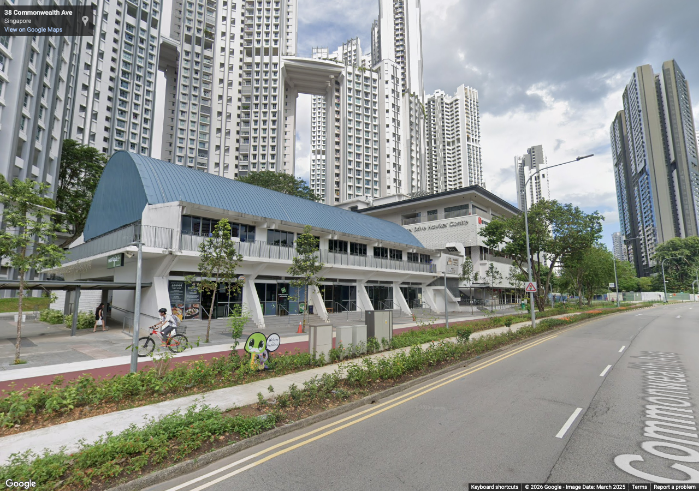
margaret-90 — Review margaret facade rhythm, public-space furniture, street vegetation and relative street scale; authored composite reference only
Source 2025-03, heading 90°, pitch 8°, zoom 1. Metadata / review
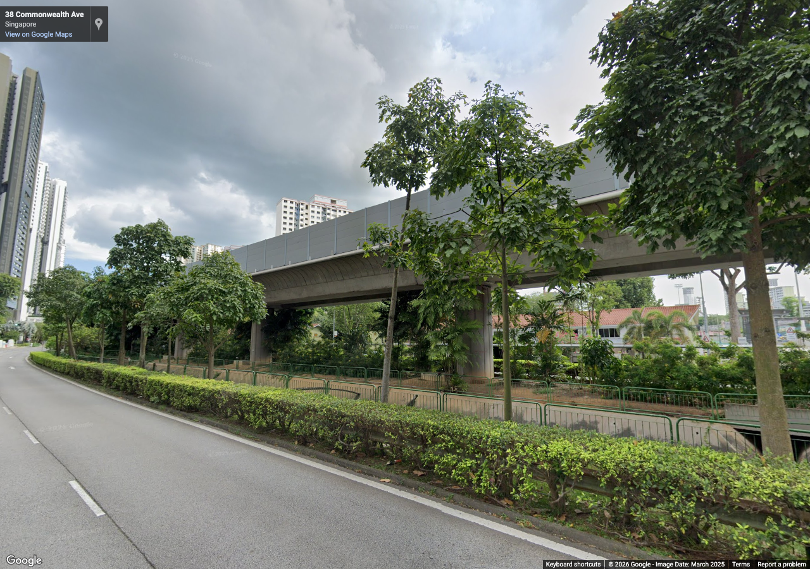
margaret-180 — Review margaret facade rhythm, public-space furniture, street vegetation and relative street scale; authored composite reference only
Source 2025-03, heading 180°, pitch 8°, zoom 1. Metadata / review
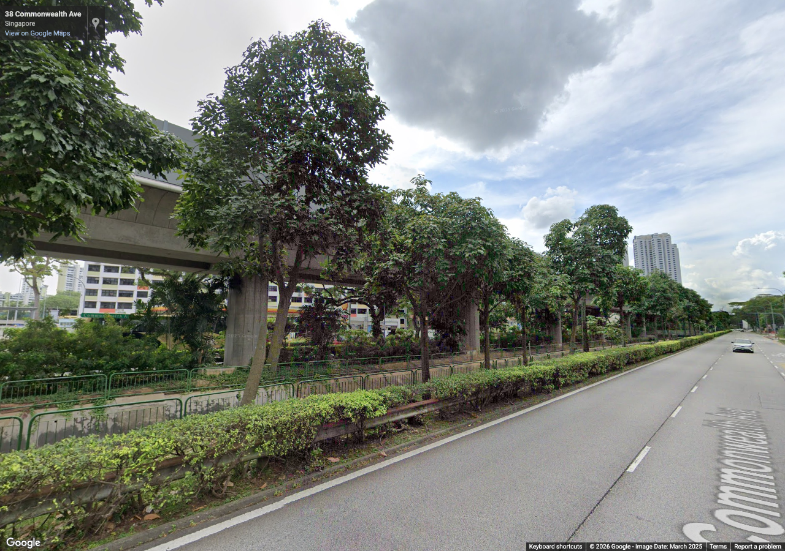
margaret-270 — Review margaret facade rhythm, public-space furniture, street vegetation and relative street scale; authored composite reference only
Source 2025-03, heading 270°, pitch 8°, zoom 1. Metadata / review
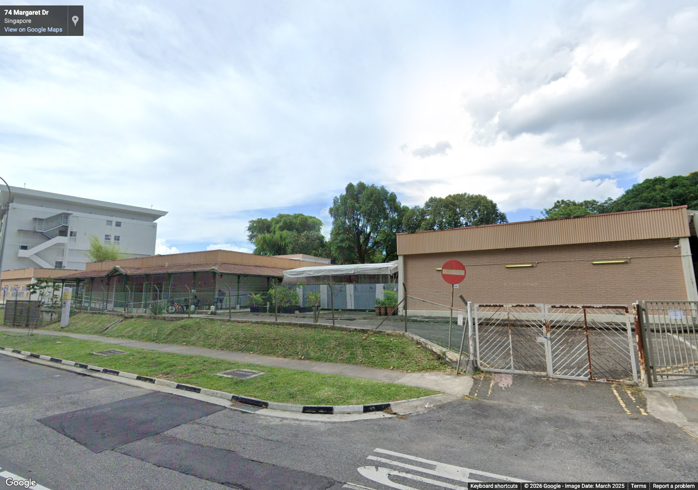
library-0 — Review library facade rhythm, public-space furniture, street vegetation and relative street scale; authored composite reference only
Source 2025-03, heading 0°, pitch 8°, zoom 1. Metadata / review
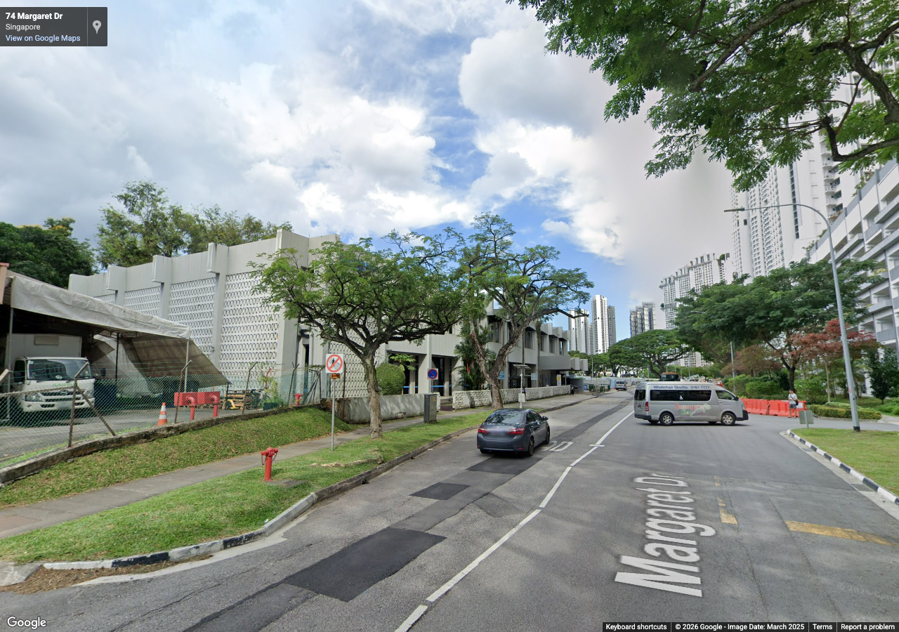
library-90 — Review library facade rhythm, public-space furniture, street vegetation and relative street scale; authored composite reference only
Source 2025-03, heading 90°, pitch 8°, zoom 1. Metadata / review
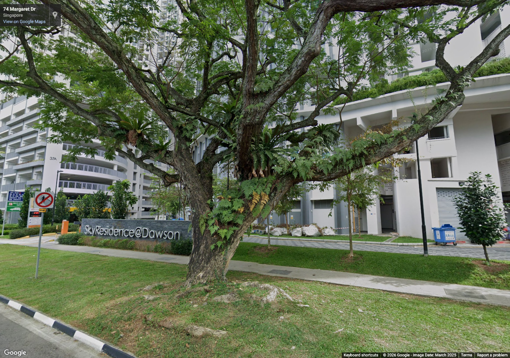
library-180 — Review library facade rhythm, public-space furniture, street vegetation and relative street scale; authored composite reference only
Source 2025-03, heading 180°, pitch 8°, zoom 1. Metadata / review
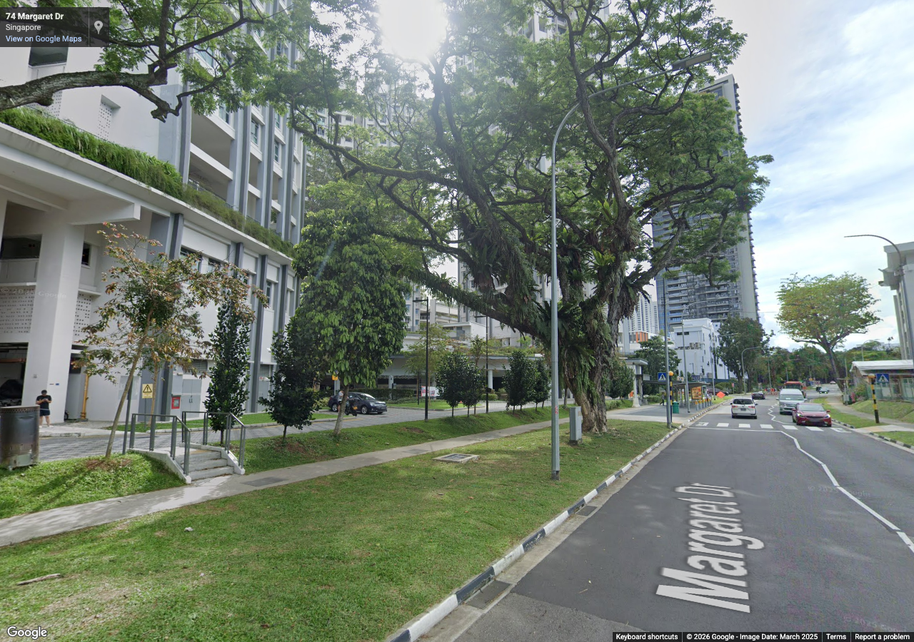
library-270 — Review library facade rhythm, public-space furniture, street vegetation and relative street scale; authored composite reference only
Source 2025-03, heading 270°, pitch 8°, zoom 1. Metadata / review